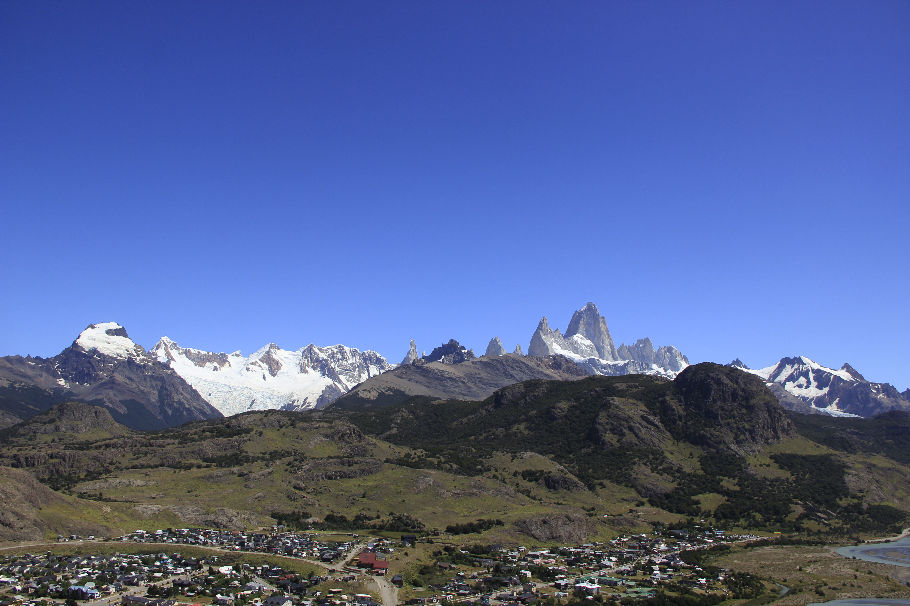

El pueblo mas joven de la Patagonia
El Chalten fue fundado el 12 de octubre de 1985, convirtiendose en uno de los pueblos mas jovenes de Argentina. Su fundación no fue casual: el gobierno argentino impulsó la creación del asentamiento en un contexto de tensión limítrofe con Chile, con el objetivo de fortalecer la presencia soberana en la zona norte del Parque Nacional Los Glaciares.

El nombre "montaña humeante"
La palabra "Chalten" proviene del idioma tehuelche y significa "montaña humeante". Esta denominación hacía referencia al Monte Fitz Roy, que los pueblos originarios observaban frecuentemente envuelto en nubes que, a la distancia, parecían humo.
El Monte Fitz Roy fue nombrado así en honor al capitán Robert FitzRoy, comandante del HMS Beagle, el barco en el que viajó Charles Darwin durante su famosa expedición por América del Sur.
De aldea a destino mundial
En sus primeros años, El Chaltén era apenas un puñado de casas prefabricadas habitadas por gendarmes, guardaparques y unas pocas familias pioneras. Sin embargo, la belleza del lugar era tan arrolladora que poco a poco comenzaron a llegar los primeros montañistas y viajeros de todo el mundo.
Durante los años 90 y principios de los 2000, el turismo fue creciendo de manera orgánica, y el pueblo fue desarrollando su infraestructura. Hoy en día, El Chaltén recibe decenas de miles de visitantes por temporada y es considerado uno de los mejores destinos de trekking del planeta.